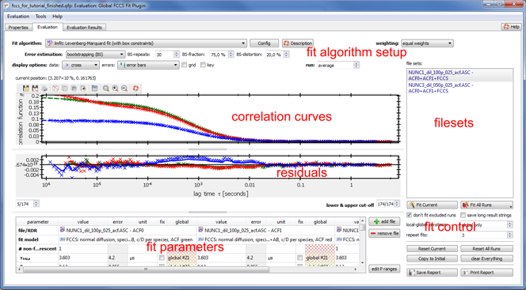

$$qf_commondoc_header.start$$ $$qf_commondoc_header.end$$
Overview
You can start an FCCS evaluation, by adding an FCCS evaluation item to your project (menu entry |Insert Evaluations|FCCS Fit in the main window of QuickFit).

The FCCS plugin screen is separated into different parts:
- At the top of the window, you can select the fit algorithm and the data weighting to be used. You can also choose, how the plugin estimates the errors of the fit parameter with the error estimation widgets. $$note:The context-menu of the fit algorithm combo-box allows you to change the fit algorithm parameters and open the onine-help page for the selected fit algorithm.$$
- In the center of the screen, an overview image of the measurement is displayed. Here you can also select (by clicking) the current run can be selected.
- The correlation curves of the selected run are displayed on the left of the overview image. This plot also contains the current fit function as thick dashed lines. Below this plot, the residuals (difference between data and model) is shown in a second plot. Here the thick lines represent a running average over the fit functions. the plot style can be edited with the widgets above the plots (error/weight style, plot style, ...).
- lower/upper cut-off: Below the plot you can limit the lag-time range, that is used for the fit (cut parts of the curve).
- At the bottom left of the window, a fit parameter table displays all currently selected files/RDRs and the according fit models together with all parameters. Each combination of specific RDRs is called a file set and for each such file set, a fit can be performed.
- On the bottom right, several buttons and widgets allow to start a fit for the currently chosen set of files/RDRs.
- Above these buttons, a list shows all available file sets. If a fit has already been performed for a specific file set, it is displayed as a dark blue or black entry. Based on the last fit, QuickFit tries to guess other sets of RDRs from the project, which can also be fitted with the currently selected models. These "guessed" file sets are displayed in gray.
Workflow
Detailed description of the different functions
- Fit Current fits the currently select run in the current file set
- Fit All Runs fits all runs in the current file set
- Fit All Runs Filesets fits all runs in all available (also the guessed) file sets
- Save/Print Report saves (PDF,PS,HTML,ODT) or prints a report, which contains all currently displayed plots amd the fit result table. Also all settings for the fit are included.
- Reset Current Resets the fit results, that are currently displayed (current run + file set) to the initial values.
- Reset All runs resets the fit results in all runs.
- Copy to Initial tells the plugin to use the current fit results as initial values for all further fits.
- local/global iterations if this is a number N>0, the fit will iterate N-times over these setps:
- fit each model to each file/RDR locally
- fir all files/RDRs globally using the values form the last step as initial values
This procedure may improve convergence on difficult problems.
- repeat fits if this is a number N>1, the fit for each run will be repeated N-times, where each time, the result of the last fit run is used as initial value for the next. Often N=3 is a good choice to improve convergence in imFCCS fits. The additionally required processing time is relatively low, as the fits typically already start with good initial conditions.
- don't fit masked runs if this is activated (default), only those runs will be fitted, which are not masked out. Especially in fits of cells it is therefore advisable to mask all runs, which do NOT belong to the cell, so processing time is reduced significantly. $$note: Typically fits take significantly longer, when no proper correlation functions is present, such as in the case of runs outside a cell, which do not show any non-vanishing correlation.$$
- save long result strings If this is activated (by default not) additional information is stored for each RDR in the fit results (e.g. a string describing the fit results). This information is typically superfluous and only needed for debugging. Also it will significantly increase the project file size. Therefore it is advisable to leave this deactiveated.